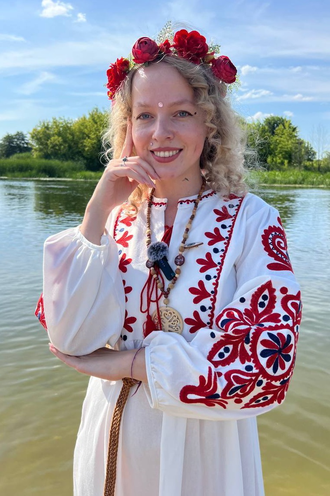
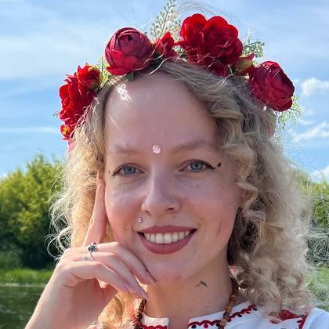

Честный таролог
Мирослава Добролюбова
- Разбор отношений
- Диагностика
- Энергетические практики

Iтвоя ситуация
Когда…
-
I
твой мужчина отдалился
-
II
в отношениях холод и неопределённость
-
III
в жизни тянется застой
-
IV
а внутри всё больше тяжести и тревоги
Помогу глубже увидеть твою ситуацию, понять, что на самом деле происходит, и выбрать шаг, который даст тебе ясность, опору и движение дальше.
Записаться на диагностикуIIна связи
Как со мной связаться

Мирослава Добролюбова